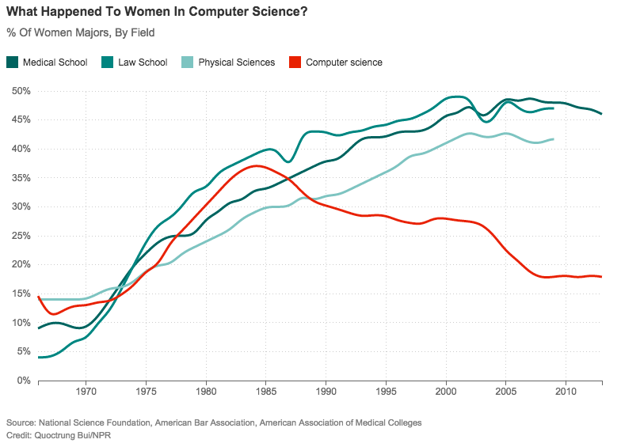

Donate
HOME
ABOUT
VOLUNTEER

At Facebook, 15 percent of tech roles are staffed by women
What can I do to increase the number of women in technology?
How can I get into computer sciences now?
How can I help a female get involved in technology?
More enlightening statistics may be found here.
phone: (123)456-7890
email: girlscode@girlscode.com
visit: 123 John Street, New York, NY